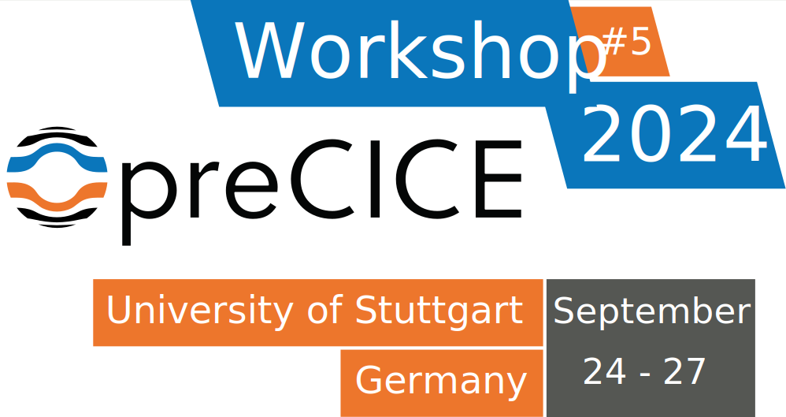
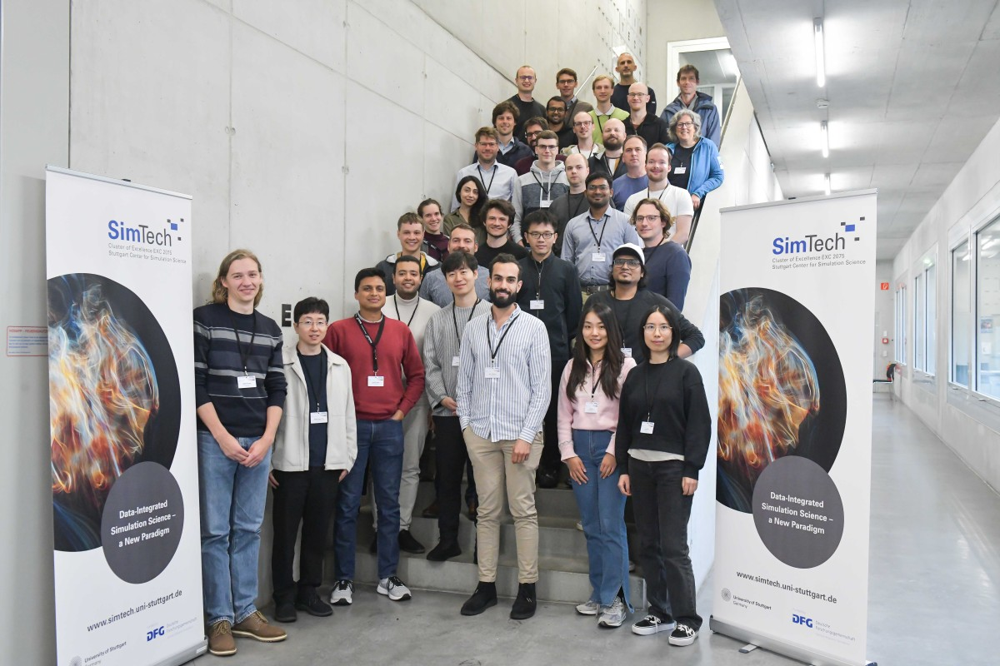

The 5th preCICE Workshop was held at the University of Stuttgart, in collaboration with SimTech, on September 24-27, 2024. Like in former workshops, the workshop consisted of a hands-on training course, followed by several talks and interactive sessions. A new part was added to the hands-on course, showcasing a fluid-structure interaction simulation with with CalculiX and OpenFOAM, and was very well received by the participants. Some other highlights of the workshop were the poster session, that took place for the very first time, and the World Café, which this year revolved around the implementation of guidelines for adapters and application cases.

Important dates
| Abstract submission deadline | June 30 (extended until July 7) |
| Early-bird registration deadline | July 15 |
| Registration deadline | September 15 |
Program
The cost of lunch, as well as coffee and snacks is included in the registration fee. The same applies for the invited dinner.
Course
Tuesday, September 24
- 08:30-09:00: ü•® Registration and coffee
- 09:00-12:00: preCICE course, part 1 & 2
- 12:00-13:00: üç≤ Lunch
- 13:00-15:00: preCICE course, part 3
- 15:00-15:30: ☕️ Coffee break
- 15:30-17:30: preCICE course, part 4
- 19:30-…: Informal dinner
Wednesday, September 25
- 08:30-09:00: ü•® Coffee
- 09:00-09:30: Wrap-up course parts 1-4
- 09:30-12:00: preCICE course, part 5 (new)
Setting up a fluid-structure interaction simulation with CalculiX and OpenFOAM.
Claudio Caccia, Politecnico di Milano, Italy
This is a new addition to the preCICE course.
Main workshop
Wednesday; September 25
- 12:00-13:30: üç≤ Registration and lunch
- 13:30-15:00: Official welcome + user introductions
- 15:00-15:30: ☕️ Coffee break
- 15:30-17:00: What’s new in preCICE?
Overview on preCICE v3
Frédéric Simonis (@fsimonis), University of Stuttgart, Germany
Version 3 of the preCICE library has arrived and brings a wide range of changes, improvements, and additional features. This talk aims to give a general overview of what has changed and what is being worked on.
News on the preCICE ecosystem: Distribution v2404
Gerasimos Chourdakis (@MakisH), University of Stuttgart, Germany
The largest preCICE distribution so far bundles preCICE v3, supports coupling micro with macro simulations, coupling to FMI models, brings a GUI to the preCICE config visualizer, Rust bindings, a completely revamped SU2 adapter, many small changes in the tutorials, and more. This talk highlights the most important recent changes in the preCICE ecosystem, acknowledging contributions from the community.
- 17:00-18:00: User talks
Chair: Ishaan DesaiMaMiCo-preCICE coupling for hybrid molecular-continuum flow simulations
Louis Viot (@LouieVoit), Helmut Schmidt University - University of the Federal Armed Forces Hamburg, Germany
Molecular-continuum flow simulations apply computationally intensive molecular dynamics (MD) simulations in localized regions of a geometry under consideration, and classical, computationally cheaper computational fluid dynamics (CFD) solvers are employed for the remainder of the vast computational domain. The macro-micro coupling tool MaMiCo handles the coupling between a MD solver and a CFD solver. It is highly parallelized and provides interfaces to couple various MD and CFD solvers. Recently, preCICE has been coupled to MaMiCo. It allows us to access the large number of CFD solvers already coupled to preCICE, to use preCICE's interpolation methods in case of non matching grids between MaMiCo's grid and the continuum software's grid, to have a real partitioned approach with separate executables, to use preCICE's advanced time coupling schemes, etc. Validation and scaling have been done on various super computers, generally on a Couette flow scenario. Furthermore, MaMiCo and preCICE have been recently used to simulate an advanced transcritical multiphase scenario. Finally, we used preCICE to couple a CFD solver running on a laptop to a massively-parallel MD simulation running on a cluster.
Simulation of coupled particle transport and FSI with application in the drilling industry
Patrick Höhn (@hoehnp), Institute for Computer Science, University of Göttingen, Germany
Drilling is essential for the recovery and storage of sub-surface energy, such as oil, gas and geothermal heat. It typically accounts for large parts of the project costs. For optimal drilling operations it is required to achieve an efficient transport of cuttings from the drill-bit to the surface. As drSilling often reaches several thousand meters below the surface, in-situ measurements of drilling parameters are very challenging. Therefore, limited field knowledge about the underlying phenomena exists and many investigations rely on simplified laboratory setups and detailed simulations. Besides technical challenges, drilling projects are always very costly, e.g. in case of deep geothermal wells the typically drilling costs account for 50% of the total project costs. Large shares of these costs are caused by non-productive time during the drilling process caused by damages to underground equipment. Particular importance in these fatigue processes are lateral vibrations of the drill string. The research problem studied by the author attempts to evaluate the influence of the cuttings transport on the damping of lateral vibrations, which requires a simulation consisting both of particle transport and fluid-structure interaction. One approach using OpenFOAM and the particle solver XDEM was already presented in previous work. Because the code of XDEM, is not publically available, the author decided to solely use publically available open source libaries for his own approach. OpenFOAM was kept as solid base for the development. A big challenge caused by the community is the limitation that code contributions are usually bound to the OpenFOAM version of the initial development with no adoptions to newer versions. Since the initial design the particle transport is realized using the CFDEM®coupling libarary and the particle solver LIGGGHTS. Both were modified to allow a deformable mesh in LIGGGHTS. The FSI aspect was more recently realized by the FSI-library solids4Foam, which has seen significant changes in version 2. Most significantly it is now compatible with the multi-physics framework preCICE. Inspired by this change, the author realized that preCICE cannot only solve the issue of coupling different codes, but also help to overcome compatibility issues between different OpenFOAM additions to be coupled. Implementing the solvers from CFDEM®coupling-PFM in preCICE would allow a much wider application with other simulation codes for the simulation of coupled particle transport simulations, e.g. solid models in solids4Foam could be easily coupled with all solvers from CFDEM®coupling.
- 19:00-…: Invited dinner
Thursday, September 26
- 08:30-09:00: ü•® Coffee
- 09:00-10:00: Keynote talk by Angelika Humbert
Chair: Miriam SchulteTackling the complexity of Greenland’s Ice Sheet with coupled models
Angelika Humbert, Alfred Wegener Institute Helmholtz Centre for Polar and Marine Research, Germany
Ice sheets are losing mass at unprecedented rates during the observational period, which has a large impact on society. Simulating their future evolution is, therefore, an urgent task. While ice sheets are basically gravity-driven lubricated flow, processes such as the calving of icebergs at the seaward margins, crack formation and meltwater retention are making it a complex system. The rapid changes in the Greenland Ice Sheet require modelling concepts in which large-scale ice sheet models are coupled with process models, such as calving and hydrology. Glaciated areas themselves are a compartment of the Earth system, and hence, Earth System Models demand ice sheet codes. This comes with requirements on ice sheet models, particularly concerning performance and coupling. In this presentation, the general multi-physics problem of ice sheet modelling is introduced, and a typical simulation framework includes procedures for deriving initial states, performance, and bottlenecks. We will discuss process models and how they relate to large-scale ice sheet codes. Finally, we will focus on the requirements of Earth system model couplers and how preCICE would advance current coupling frameworks of climate models.
- 10:00-12:00: User talks
Chair: Benjamin UekermannA new adapter of the weather numeric prediction software Weather Research and Forecast (WRF) model
Zhen Wu, Sun Yat-sen University, China
In the field of geoscience, the full knowledge of atmospheric conditions is necessary in the fields of urban planning, disaster mitigation, emergency response and air pollution assessments. While we see the remarkable advantages of the meso-scale model of Weather Research and Forecast (WRF) in the simulation of the atmosphere, it shows significant deficiencies in describing the micro-scale effects of the complex underlying surface. For solving this problem, a new adapter is developed based on preCICE. Thanks to the open source nature of the WRF model, the developed adapter enables the WRF to be coupled with other widely used Computational Fluid Dynamics (CFD) software, such as OpenFOAM. In fact, the developed adapter aims to provide the WRF model the Fluid-Fluid coupling capacity, which could be used to conduct a trans-scale numerical simulation downscaling the results from a numeric weather prediction software to drive a micro-scale (~1m) flow simulation. Such a trans-scale simulation shows the detailed flow structures inside the urban boundary layer or above complex hilly terrain.
Isogeometric Analysis Suitable Coupling Methods for Fluid-Structure Interactions with Solid-solver G+Smo Coupled via preCICE
Jingya Li, Delft University of Technology, The Netherlands
Accurate simulation of fluid-structure interactions (FSI) remains a difficult task in computational mechanics, especially when dealing with complicated geometries and dynamic coupling between fluid and solid domains. This paper introduces novel benchmarks in the field of FSI that take advantage of isogeometric analysis (IGA) and the adaptibility of the preCICE coupling library. We offer a framework that combines the IGA-based solid mechanics library G+Smo, the computational fluid dynamics capabilities of openFOAM, and the Julia-based WaterLily.jl fluid solver, aimed at advancing hydrodynamic simulations. Central to our approach is the utilization of spline-based communication for IGA-based fluid-structure interaction simulations. We employ spline-based communication instead of quadrature points to minimize the amount of information exchanged. A comparison of accuracy and efficiency between spline-based communication and quadrature point-based communication will be presented. Several benchmarks will be discussed, ranging from the replication of established preCICE cases to direct comparisons with other solid mechanics libraries, to demonstrate the effectiveness of spline-based communication. Through these benchmarks, we conclude that spline-based communication is more efficient than quadrature point-based communication and yields the same level of accuracy.
Application of preCICE for fire-structure interaction predicting the damage of concrete walls under fire load
Arulnambi Palani, Helmut Schmidt University - University of the Federal Armed Forces Hamburg, Germany
This contribution presents a fully coupled simulation methodology for modeling a fire in a building and the developing structural damage to the concrete walls. Simulation of a fire without considering structural damages is already a challenging task due to the need to accurately account for a variety of chemical and physical processes such as pyrolysis, combustion, turbulence and heat transfer by convection, conduction and radiation. To achieve a practical and computational efficient approach, it is crucial to consider the expected computing times when selecting the models. Currently, the simulation methodology is implemented using the open-source software Fire Dynamics Simulator (FDS), which is a finite-difference solver of the Navier-Stokes equations on Cartesian grids. FDS relies on the large-eddy simulation technique to account for the instantaneous turbulent flow. The complexity increases when the fire causes structural damage to the building. In this study, the concrete damage in the form of cracks, holes or spalling is computed using a phase-field method with a FEniCS-based solver. The thermal boundary conditions are provided by the fire simulation. Thus, both solvers are coupled using the open-source coupling framework preCICE, which transfers wall temperatures from the fire simulation to the structural solver. In return the structural solver sends the predicted spalling data to the fluid solver. Consequently, the computational domain of the fluid solver must be adapted to account for the generated holes in the wall structure, affecting the ongoing CFD simulation. These holes facilitate the leakage of smoke gases and radiative heat transfer through the concrete wall, thereby contributing to the spread of the fire. In this work, the newly developed two-way coupled approach for the fire-structure interaction is applied to sample cases of thermal spalling induced in a concrete wall structure and the resulting leakage of hot gases. Another challenge is the implementation on a high-performance computer. Similar to many other coupled problems, the computational effort is not equally distributed between the two disciplines involved. Simulating the turbulent fluid flow and heat transfer in an entire building typically requires much more CPU time than predicting the structural response. This imbalance is taken into account by assigning a larger number of nodes to the MPI-parallelized CFD simulation compared to the structural simulation. All three codes are implemented on the local HPC cluster HSUper, which consists of 571 compute nodes, each equipped with 2 Intel Icelake sockets (Xeon Platinum 8360Y, 36 cores) enabling fast and efficient simulations.
How to use time interpolation in the preCICE tutorials
Benjamin Rodenberg (@BenjaminRodenberg), Technical University of Munich, Germany
With version 3, preCICE has generally introduced time interpolation. This feature, which applies waveform iteration for coupling, internally transforms the exchanged quantities into time-continuous functions by applying B-spline interpolation. The coupled participants can then sample from the B-spline at any point in time. My presentation will introduce the API and configuration extensions required for time interpolation and provide practical examples. I will show how we can use this new feature to improve the accuracy and performance of time-stepping using preCICE tutorial cases. Additionally, I will show how time interpolation supports the implementation of adaptive black-box schemes provided by libraries like Scipy or MATLAB in coupled problems.
- 12:00-13:00: üç≤Lunch
- 13:00-13:45: User talks
Chair: Benjamin RodenbergQuasi-Newton methods for time adaptive waveform iterations
Niklas Kotarsky (@NiklasKotarsky), Lund University, Sweden
We consider methods for dynamic coupled problems, in particular partitioned solvers for fluid-structure interaction and thermal transfer where different sub-solvers are used for the different domains. To further improve the computational efficiency, different and adaptive time steps in the sub solvers are employed. Using so called waveform iterations, these goals have previously been achieved for heat transfer problems using relaxation. Quasi-Newton methods have recently been combined with waveform iterations for the case of constant time grids. In this talk we further extend the quasi-Newton waveform iterations to the time adaptive case, where both of the sub-solvers use an adaptive time stepping scheme. We also give an overview of the convergence properties of time adaptive waveform iteration and quasi Newton methods as well as proposing an implementation of quasi-Newton acceleration for waveform iterations in the open source coupling library preCICE. Lastly, we also show that using a time adaptive solver results in faster run times for a simple partitioned heat conduction test case, as well as a more realistic non-linear test case where a hot piece of steel is cooled by an air stream.
Multirate Magnetothermal Coupling with Time Adaptive Waveform Relaxation
Michael Wieshau, Technical University of Darmstadt, Germany
When simulating multiphysical problems, the different time scales of the physical aspects make it computationally inefficient to solve the problem as one monolithically coupled system. Electromagnetic processes, for example, happen at significantly higher time rates than the thermal heating induced by the electric losses. One approach to efficiently solve this coupled multirate system is to apply Waveform Relaxation and compute the electromagnetic and thermal problems with different time rates iteratively in a decoupled way. This work explores the possibilities to couple electromagnetic and thermal simulations of a 2D FEM transformer in Matlab with preCICE. The heat generated by the magnetic eddy-current losses influences the temperature dependent conductivity of the electric circuit, which again influences the electric losses generating the heat. This two-way coupling is solved with time adaptive Waveform Relaxation and independent blackbox solvers for the time-stepping within the two subproblems.
- 13:45-14:30: preECO project talk
Standardization of Adapters and Application Cases: The preECO Project
Benjamin Uekermann (@uekerman), University of Stuttgart, Germany
Through DFG's recent research software call, the preCICE maintainers acquired funding to increase the quality and reusability of all components in the preCICE ecosystem: the preECO project. For the next three years, we want to define and implement standardization guidelines together with you – the preCICE community. These guidelines should cover adapter development and application cases. This could include high-impact requirements such as that adapters need to have an independent configuration file adhering to a defined schema and format. But also little details, such as that every application case needs to name the preCICE configuration file exactly `precice-config.xml`.The main idea is to establish a review process, where users can apply for quality stamps for their adapters or application cases. What is in this for you? You will get reviews for your adapters and application cases. You will know that they not only work, but that they are good and correct. You also get access to more adapters and everything will be easier to exchange. And you potentially get access to more exciting simulation setups than the tutorial cases. In this talk, we want to introduce the preECO project and explain its ideas, timeline, and scope. We then want to present first tentative guidelines for adapters and application cases as a starting point for discussion.
- 14:30-15:00: ☕️ Coffee break
- 15:00-16:15: World Café
- 16:15-16:30: Photo
-
16:30-18:30: Poster session with refreshments
List of posters
A generic preCICE adapter for the Ice-sheet and Sea-level System Model
Daniel Abele (@dabele), Alfred Wegener Institute Helmholtz Centre for Polar and Marine Research, Germany
Ice sheets in Antarctica and Greenland have feedback with oceans, the atmosphere, and other earth system components. To represent feedback between compartments, simulations of ice sheets need to be coupled with simulations of those other processes. Ice sheet models solve the thermomechanical system of equations and processes, such as calving and the effect of subglacial hydrology on sliding. The Ice-sheet and Sea-level System Model (ISSM) is a mature and widely used code for simulating continental ice sheets. It keeps track of a large number of state variables and supports different mesh types. Possible uses for coupling are ocean, atmosphere, and subglacial hydrology models. There may even be benefits to coupling ISSM to itself for performance reasons. To handle these diverse use cases and the complexity of ISSM, we are developing a fully featured preCICE adapter for ISSM. It offers a convenient configuration of the coupling interface and variables and performs common pre- and post-processing tasks.
Energy Harvesting Using Active Flexible Heaving Hydrofoils: A Case Study on Developing a Coupled Solver Based on OpenFOAM Overset Zone, preCICE, and CalculiX.
Karim Ahmed (@KariimAhmed), Pprime Institute, University of Poitiers, France
The influence of wing deformation on animal propulsion and movement has sparked significant interest in biomimetics within both the academic and industrial communities. The core focus of this research is the development of an advanced numerical tool, essential for analyzing the motion of biological systems within fluid environments. This initiative is crucial for advancing our understanding of fluid-structure interaction (FSI) phenomena and facilitating the design of hydroelastic energy harvesters. To address this, the development process of an adequate numerical tool capable of solving the complex FSI problem involves a mesh motion tool, fluid solver, and structure solver. Over the past year, our efforts have focused on developing a reliable mesh motion tool capable of solving the fluid field, the newly enhanced oversetZoneFvMesh, based on OpenFOAM’s default overset technique. Current efforts are concentrated on coupling the structure solver CalculiX to OpenFOAM using the open-source library preCICE, further advancing our capability to simulate flexible flapping hydrofoils and deepening our research into efficient energy harvesting.This work introduces the newly developed "Coupled-OversetZone-preCICE-CalculiX" solver. The reliability of the modified Overset solver is further confirmed by applying it to propulsion generation scenarios using a flapping foil case study and comparing the outcomes against established literature. Additionally, the coupled FSI solver underwent critical validation by solving the benchmark Turek-Hron problem, demonstrating complete agreement with published results. The study focuses on active-passive foils, employing active heaving motion and passive deformation, under conditions of Reynold’s number (Re) = 20,000, Reduced frequency (k) = 1, Chord length (c) = 0.1 m, Non-dimensional heaving amplitude (h0/c) = 1 and Angle of Attack (α) = 0°.Subsequent tests with the coupled FSI solver explored the impact of material flexibility by varying Young’s modulus (E). Using a stiff material like polyethylene terephthalate (PET), with E = 5.2 GPa, resulted in a delta efficiency of 1.43%. Conversely, employing a more flexible material such as thermoplastic polyurethane (TPU) with E = 26 MPa enhanced energy harvesting efficiency by 7%. A test case using a material with E = 5 MPa, identical in density to TPU, was examined to assess the impact of material elasticity on efficiency. This case demonstrated a notable efficiency enhancement of 16.3% relative to the solid case. These results provide a promising beginning for our ongoing research aimed at developing a hydroelastic energy harvester using a flapping flexible hydrofoil.
Dynamic adaptivity and parameter optimization for two-scale coupled simulations with preCICE
Jun Chen (@Fukijawas), University of Stuttgart, Germany
In the Micro Manager, the adaptivity feature is provided to spare computational cost resulting from large number of micro-scale simulations, with which only part of the simulations are actively solved while others copy the result of the most similar active simulation. With the proposed dynamic adaptivity, we adjust the similarity threshold, which controls how many active simulations there are going to be, according to current convergence status. When the problem is still far away from convergence, computational cost could be wasted to pursue the same accuracy as when the problem is going to converge soon. With the dynamic adaptivity feature, we want to have less micro-scale simulations, thus less accurate results, for early stage in each time step. The test simulation used here would be a two-scale heat conduction problem. The parameters involved in the Micro Manager configuration are case-dependent. We are going to prove the advantage of dynamic adaptivity by seeking for the case-dependent parameters using Bayesian optimization with the target of minimizing the runtime of the whole simulation. This optimization might be done based on the external input from multiple simulations or on-the-fly input with multiple time-steps. In preCICE there are different acceleration methods to enable or accelerate the convergence of the coupling problems. We are going to try the similar Bayesian optimization methods to look for the optimal parameters for acceleration methods configuration.
Ensuring your simulations still run: the preCICE system tests
Gerasimos Chourdakis (@MakisH), University of Stuttgart, Germany
The preCICE ecosystem is now better tested than ever, using the recently completed system regression tests. But did you know that you can also help us check that your simulations are not breaking whenever we release a new version of a preCICE component? This talk will introduce the current system tests and their design decisions, focusing on examples, and guiding you to prepare your simulation cases for our continuous integration system.
A software stack for large coupled multiscale simulations with preCICE
Ishaan Desai (@IshaanDesai), University of Stuttgart, Germany
For many challenging applications in simulation technology, micro-scale phenomena can dominate macro-scale behavior. Examples in this setting are reactive porous-media flow, biomechanical models of human organs, and composite structures. In this poster, we present the Micro Manager, a software component which manages a set of micro simulations, and couples them to the macro simulation through preCICE. By design, preCICE is able to couple two or more models on one physical scale. Hence, we develop the Micro Manager, to allow for application-agnostic macro-micro coupling with preCICE. While reusing key coupling implementations of preCICE (e.g., parallel communication and fixed-point acceleration schemes), the Micro Manager calls all micro-scale simulations as libraries in an adaptive manner and is itself coupled to the macro-scale simulation using preCICE. We show several applications which use the Micro Manager. For several application cases, we show the effect of adaptivity on overall performance, and some remedial steps taken to improve it.
3D Simulations of Cilia-Particle Interactions Using preCICE Library
Divyaprakash (@divyaprakash-iitd), Indian Institute of Technology Delhi, India
Our research explores the sensory functions of passive biological cilia in animal cells and microorganisms through computational analysis. Our objective is to understand the hydrodynamic mechanisms that enable cilia arrays to sense particles in fluid flow and to develop a machine learning model for predicting particle properties based on these interactions. We created a computationally efficient and accurate two-dimensional model by adapting Kirchoff rod theory to represent cilia and a neo-Hookean massless solid model for particles. These models are coupled with fluid dynamics using the Immersed Boundary Method. We performed numerous simulations involving particles of various shapes and sizes moving through a cilia array in a channel, driven by an oscillating top wall. The data generated, was used to train a Long Short-Term Memory Network coupled with a Regression Layer. Our results demonstrate that the trained machine learning model can predict particle size and aspect ratio with reasonable accuracy. However, a limitation of our approach is that the work is confined to two dimensions whereas, in three-dimensional (3D) simulations, we can accurately capture the full six degrees of freedom of particle motion and the spatial dynamics of cilia, including coordinated movements like metachronal waves. This comprehensive approach is essential for understanding complex biological processes in realistic spatial contexts. To address this, we developed an in-house 3D solver for solid dynamics and coupled it with the fluid flow solver of OpenFOAM. While we have obtained some preliminary results, this implementation is currently serial and uses explicit coupling. Additionally, the Dirac-delta function employed for force and displacement transfer between the fluid and solid mesh is computationally inefficient. We plan to implement the preCICE library to couple our solid solver with OpenFOAM, allowing us to benefit from parallel coupling for enhanced computational efficiency, precise data mapping between fluid and solid meshes, and support for implicit coupling schemes crucial for accurate three-dimensional simulations. We intend to incorporate the available OpenFOAM adapter and develop an adapter for our custom solid solver. Additionally, we are interested in exploring the possibility to implement a discrete Dirac delta function within the preCICE source code. This implementation would enhance mapping capabilities, particularly useful for future applications of the immersed boundary method. This setup will significantly improve our ability to simulate complex interactions like cilia movement and particle dynamics with greater accuracy and efficiency.
Partitioned multi-physics simulations of the neuromuscular system
Carme Homs-Pons (@carme-hp), University of Stuttgart, Germany
Disruptions of the neuromuscular system impair the function of skeletal muscles and limit the body's motion. We develop an exhaustive framework to simulate skeletal muscles. Our approach includes models for the mechanical deformation, generation of force at the sarcomeres, and the electrical stimulation by the motor neurons. Hence, a multi-physics multi-scale model is needed. We use preCICE to couple our electrophysiological in-house solver OpenDiHu, to the mechanical solvers FEBio and deal.ii. Likewise, we use preCICE to couple different OpenDiHu solvers. We present the results for a 5-participant simulation of a human biceps and its neighbouring tendons using compositional coupling schemes and quasi-Newton acceleration. In addition, we show our progress towards a two-muscle-one-tendon model of an agonist-antagonist muscle pair after an agonist-antagonist myoneural interface surgery.
Coupling subglacial hydrology to a continental-scale ice sheet model
Thomas Kleiner (@tkleiner), Alfred Wegener Institute Helmholtz Centre for Polar and Marine Research, Germany
Subglacial hydrology plays a key role in many glaciological processes. The amount of water at the glacier base and the properties of the hydraulic system modulate the basal sliding and, thus, ice discharge. It has further been found that subglacial discharge is one of the main drivers of submarine melting and glacier terminus retreat for Greenland’s marine-terminating glaciers. It is also widely expected that subglacial hydrology will be even more important than today in continental-scale simulations of the Greenland ice sheet in a warmer future climate. Therefore, we adapted our MPI parallel implementation of the confined-unconfined aquifer system model (CUAS-MPI) to run in a coupled environment using preCICE. Modifications of the time step handling, the simulation pipeline, and the design of individual modules within CUAS-MPI were needed. As we have used unit testing and continuous integration since the first days of CUAS-MPI, we also extended our test suite for the new coupling features. We present the design decisions of our simulation pipeline and the extensions of our test suite. We further present first results of the coupled model setup based on an artificial ice sheet geometry and discuss our model initialization strategy.
Just-in-time data mapping with preCICE
David Schneider (@davidscn), University of Stuttgart, Germany
The so-called 'direct mesh access' enables users to directly access coupling meshes of other participants. While this approach frees the user from having to provide a coupling mesh during the initialization, it requires the user to take care of potential data mappings when reading or writing data to the remote mesh. With a so called 'indirect mesh access,' we want to introduce new API functions, which enable users to pass data with temporary data locations to preCICE. Internally, preCICE computes the configured mapping just-in-time when the API functions are called. In this way, users can take advantage of coupling meshes which vary over time while the the data mapping is still carried out by preCICE. This talk introduces the concept, shows performance results and highlights the practical benefits of just-in-time data mapping.
The state of changing meshes in preCICE
Frédéric Simonis (@fsimonis), University of Stuttgart, Germany
preCICE assumes all meshes to be static after initialization. While this assumption is useful for building a high-performance library, it prevents preCICE to handle runtime remeshing, discrete element method solvers, and adaptive, dynamic meshes. This talk explains existing use-cases, workarounds and the latest progress on how to enable mesh alterations at runtime.
Friday, September 27
- 08:30-09:00: ü•® Coffee
- 09:00-09:30: User support preparation
- 09:30-11:45: Hands-on user support
- 11:45-12:00: Closing remarks
- 12:00-13:00: üç≤Lunch
- 13:00-15:00: Hands-on user support
- 15:00-15:30: ☕️ Coffee break
- 15:30-17:30: Hands-on user support
Program details
User introductions
The official welcome will take place on Wednesday, September 25. It will be followed by a round of introductions, so that everyone knows who to talk to during the workshop.
World Café
A classic for a preCICE Workshop, the preCICE World Café is your opportunity to shape the future of preCICE. This year, we are focusing the discussion on the standardization effort via the DFG project preECO, and in particular on the following topics:
- Application case guidelines
- Adapter guidelines
- Adapter configuration schema (TBD)
- Discussion and decision process
- Review process
- Added value
User support sessions
It’s a workshop and not a classical conference, as we also get to do things together. Meet the experts to discuss your current or planned projects, as well as to debug any current issues.
On November 15, 14:00-17:00, we will have a post-workshop user-support session to catch up on any progress.
preCICE training course
If you are new to preCICE, this is the perfect way to get started. September 24 is for you, offering only training (parts I-IV). Even if you joined this course in previous years, don’t miss the new, community-contributed part V on September 25.
preCICE Course I: Basics
Instructors: Gerasimos Chourdakis, Benjamin Uekermann
Affiliation: University of Stuttgart, preCICE developers.
A hands-on introduction to preCICE, recommended for new users that want to learn how to couple their own codes.
In this first part, we couple two simple Python codes, discussing the basic methods of the preCICE API.
Read more details and software requirements in the preCICE training page.
preCICE Course II: Tools
Instructors: Gerasimos Chourdakis, Benjamin Uekermann
Affiliation: University of Stuttgart, preCICE developers.
A hands-on introduction to preCICE, recommended for new users that want to learn how to couple their own codes.
In this second part, we take a tour over available tools to configure, understand, and post-process preCICE simulations. More specifically, we have a look at the preCICE logger, config visualizer, mesh exports, and watchpoints of preCICE. We also discuss common tips for visualizing partitioned simulations in ParaView.
Read more details and software requirements in the preCICE training page.
preCICE Course III: Implicit Coupling
Instructors: Gerasimos Chourdakis, Benjamin Uekermann
Affiliation: University of Stuttgart, preCICE developers.
A hands-on introduction to preCICE, recommended for new users that want to learn how to couple their own codes.
In this third part, we use a conjugate heat conduction scenario coupling OpenFOAM with Nutils to study implicit coupling.
Read more details and software requirements in the preCICE training page.
preCICE Course IV: Data Mapping (updated)
Instructors: Gerasimos Chourdakis, Benjamin Uekermann
Affiliation: University of Stuttgart, preCICE developers.
A hands-on introduction to preCICE, recommended for new users that want to learn how to couple their own codes.
In this fourth part, we will explore aspects of accuracy and efficiency in data mapping, using ASTE.
Compared to last year, this course part has been redesigned keeping in mind the recent mapping improvements in preCICE v3.
Read more details and software requirements in the preCICE training page.
preCICE Course V: FSI Workflow (new)
Instructors: Claudio Caccia, Gerasimos Chourdakis
Affiliation: Politecnico di Milano, University of Stuttgart.
A community-contributed training module showcasing how to setup an fluid-structure interaction simulation from scratch, coupling OpenFOAM and CalculiX for the flow around a wing.
This covers the steps of mesh preparation (with FreeCAD for CalculiX, and snappyHexMesh for OpenFOAM), the structure and flow simulations, and finally the coupled FSI simulation.
Read more details and software requirements in the preCICE training page.
Call for contributions
The call for contributions is closed.
You do not need to submit a contribution to join this workshop. However, your contributions are very welcome! We are looking for talks and posters that could be beneficial for the wider preCICE community. Are you developing a new adapter? Are you using preCICE for an exciting new application? Are you developing new methods that should not be missing from preCICE? If the answer to any of these questions was yes, we encourage you to submit a brief abstract for a 20 minutes talk. Are you revisiting one of the classical preCICE use cases? Did you already present your work in a previous workshop? Then we would be very happy to catch up with your work and we encourage you to present a poster. [To abstract submission](https://ipvscloud.informatik.uni-stuttgart.de/apps/forms/s/JYtwkfiiiMCjHGjqjACifDWy)Registration
The registration period had ended.
Registration is open until September 15. Register before July 15 to benefit from early-bird prices! You can register for the full workshop (talks + course) or for the main part (only talks), in case you already know the topics covered by the course or you cannot attend on the first days. [To registration](https://tagung.informatik-forum.org/preCICE2024/register) ### Early-bird registration fee | Ticket type | Members of academia | Members of industry | |---|---|---| | workshop + course | 300 Euro | 500 Euro | | workshop | 200 Euro | 300 Euro | ### Standard registration fee | Ticket type | Members of academia | Members of industry | |---|---|---| | workshop + course | 450 Euro | 750 Euro | | workshop | 300 Euro | 500 Euro | In case of cancellations, requests for refunds must be made by July 15, 2024. To cancel your registration, send an email to [preCICE2024@simtech.uni-stuttgart.de](mailto:preCICE2024@simtech.uni-stuttgart.de). No refunds will be approved after July 15, 2024. There is a 50€ administration fee that will be deducted for any refunds.The venue
The 5th preCICE Workshop will be held in Pfaffenwaldring 5A, room 0.009 at the Campus Vaihingen of the University of Stuttgart. Campus Vaihingen is located between the city district of Vaihingen (easily reachable by bus) and the city center of Stuttgart (15 min away by suburban rail).
For those who wish to extend their stay in Stuttgart, we refer you to Stuttgart Tourism. Besides, the Cannstatter Volksfest, a major event in the city of Stuttgart, will take place from September 27 to October 13.
Dinner
The invited dinner will take place on September 25 at 19:00 in Vaihinger Wirtshaus.
On September 24, we have planned an informal dinner (not included in the registration fee) for those who are already in Stuttgart. The dinner will be at 19:30 in Bo’s Burger & Bar.
Accommodation
We encourage you to book accommodation in a nearby hotel as soon as possible. We provide a list of potential hotels in collaboration with Stuttgart Marketing.
Contact
For questions related to the 2024 preCICE workshop, write us at preCICE2024@simtech.uni-stuttgart.de.
Supporters